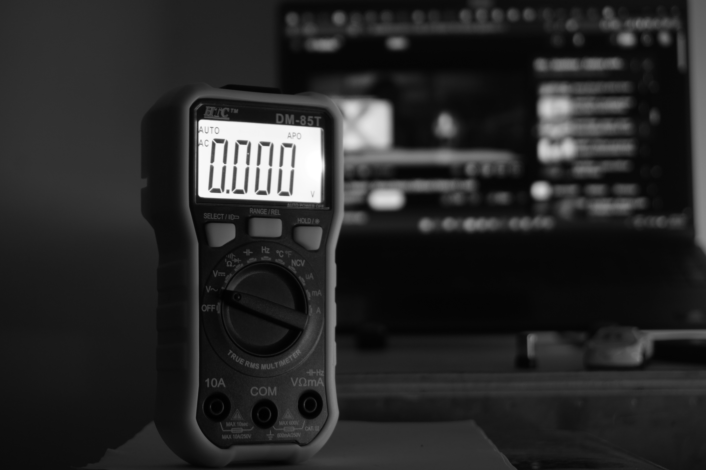
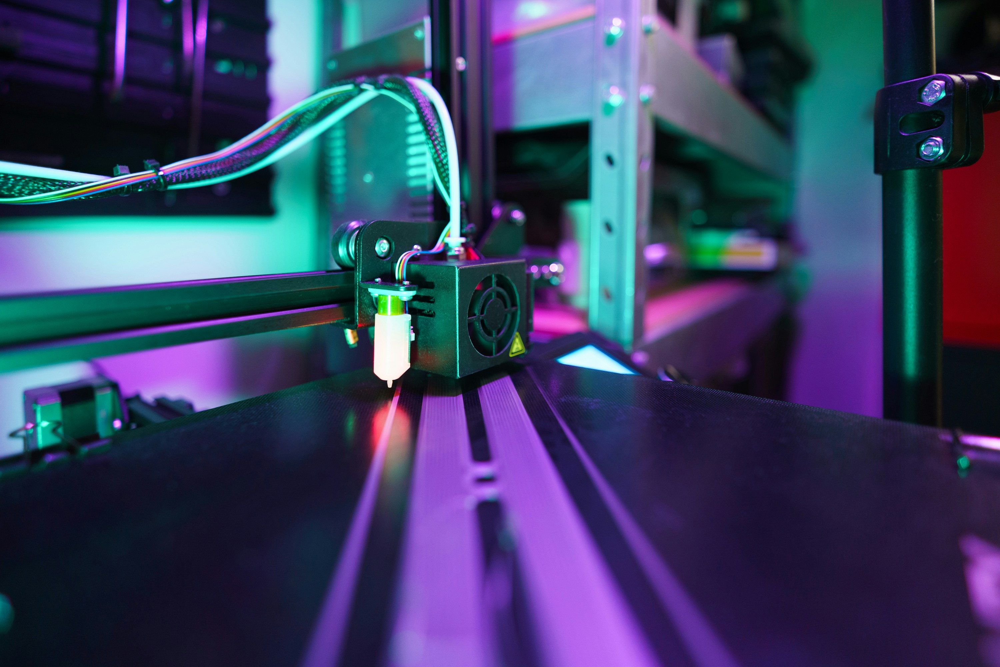
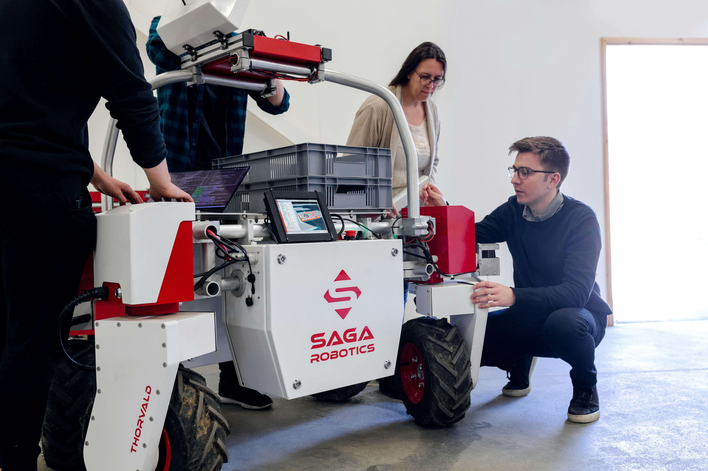
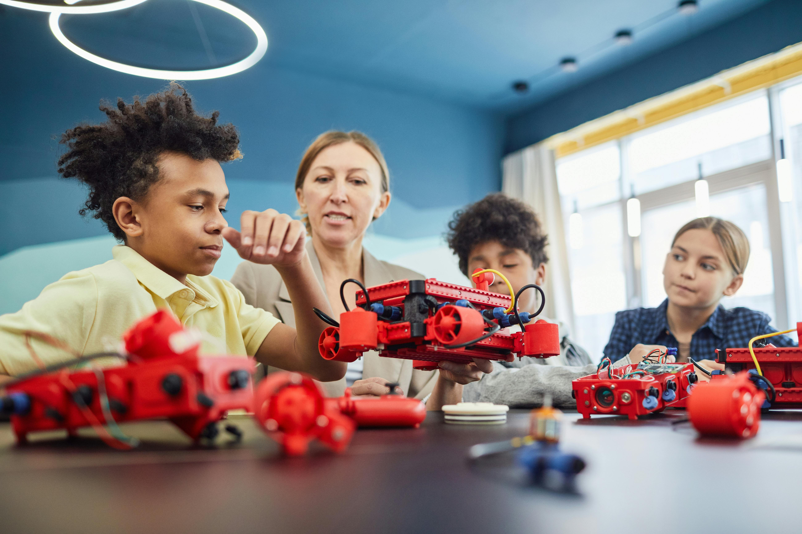
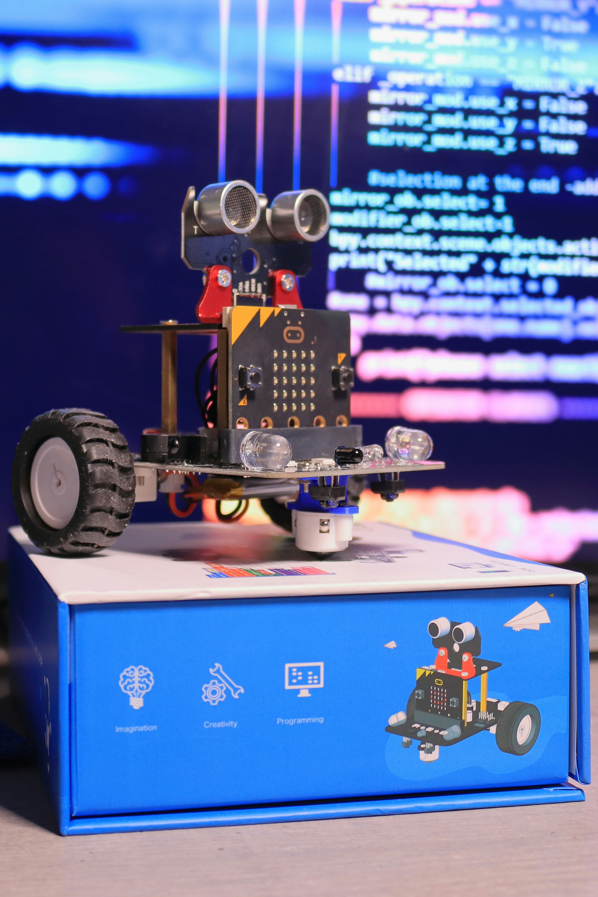
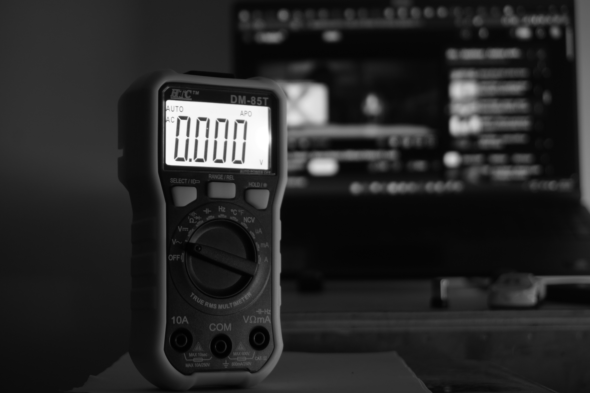
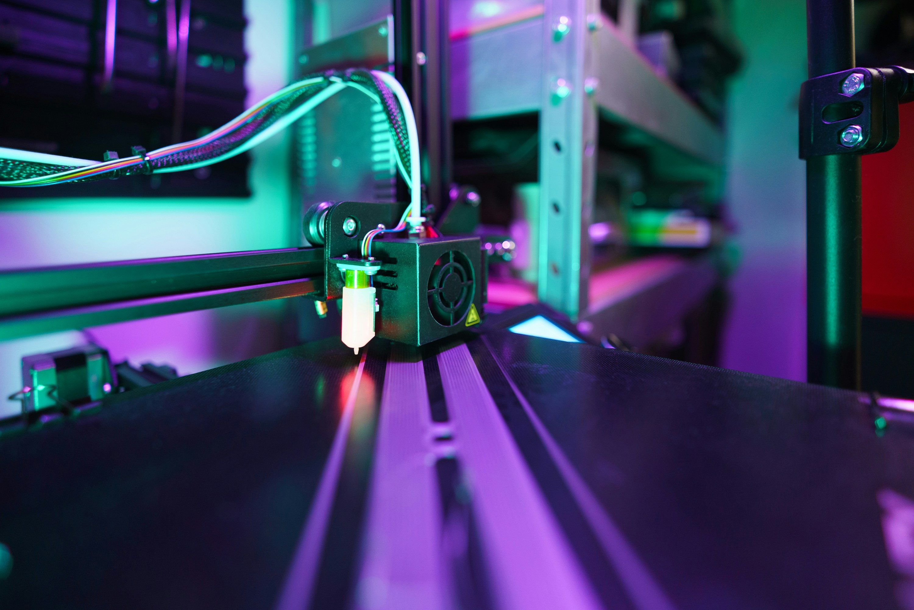
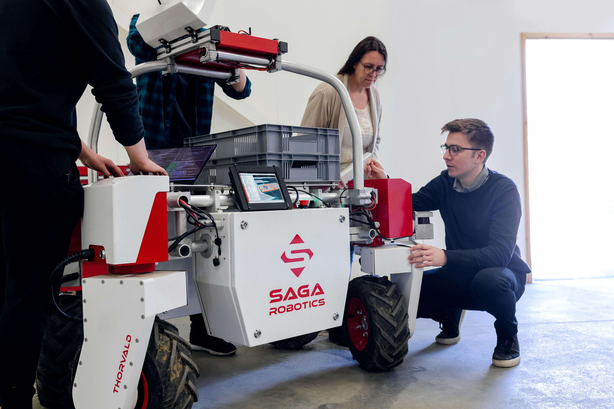
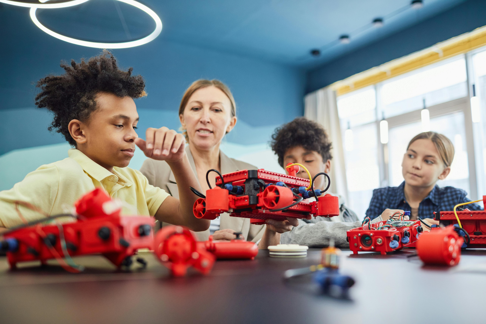
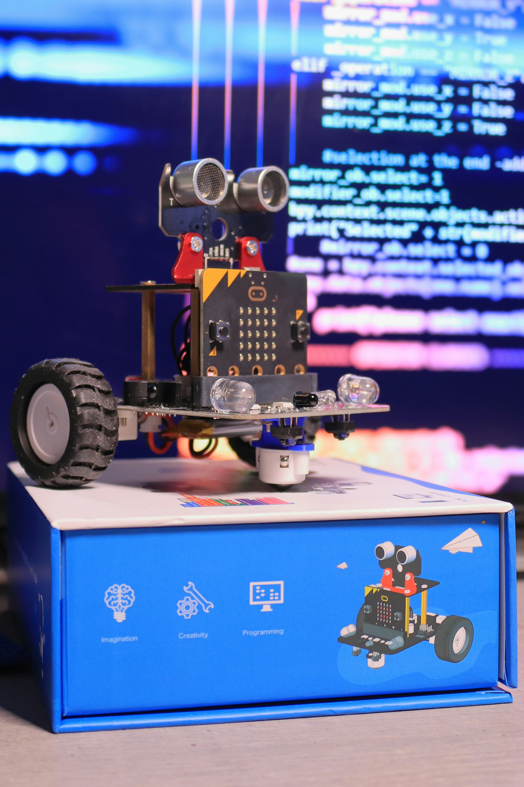

Upcoming Events
RoboWars 2.0
A high-energy combat robotics competition where teams battle custom-built robots in a knockout arena.
Date: 9 January 2026
Time: 10:00 AM – 4:00 PM
Venue: Central Lawn, NIT Patna
RoboWars 2.0 is a flagship combat robotics event organized by the Robotics Club, NIT Patna. Teams design and build remote-controlled robots capable of withstanding intense battles inside a custom arena. The competition evaluates mechanical strength, control precision, strategy, and innovation. The event promises thrilling matches, live commentary, and exciting prizes for winners.

Workshop: Python for Embedded Robotics
Hands-on workshop on using Python for controlling robots and interfacing sensors.
Date: 17 January 2026
Time: 9:30 AM – 12:30 PM
Venue: EE Block, Lab-3
This beginner-friendly workshop introduces Python programming for embedded robotics systems. Participants will learn how to control motors, read sensor data, and build basic robotic applications using Raspberry Pi and microcontrollers. The session focuses on practical implementation with live demonstrations, making it ideal for students starting their robotics journey.

RoboRace: Line Follower Challenge
Race your autonomous bot and test its speed and accuracy on a challenging track.
Date: 25 January 2026
Venue: Sports Ground, NIT Patna
Time: 11:00 AM – 3:00 PM
RoboRace challenges teams to design autonomous line-following robots capable of navigating complex paths with speed and precision. The track includes sharp turns, curves, and junctions to test algorithm efficiency and hardware tuning. Winners are determined based on completion time and consistency. The event encourages innovation in sensor optimization and control logic.
Project Showcase: Autonomous Delivery Bot
Live demonstration of a student-built autonomous delivery robot with technical walkthrough.
Date: 3 February 2026
Time: 4:00 PM – 6:00 PM
Venue: Robotics Club Room, Tech Block-C
The Robotics Club presents its semester project—an autonomous delivery robot designed for indoor navigation. The showcase includes live demonstrations, system architecture explanation, and discussions on path planning, obstacle avoidance, and hardware integration. Open to all students interested in applied robotics and real-world automation solutions.
Tech Talk: AI in Robotics
Hands-on introduction to drone aerodynamics, propulsion systems, and basic flight controller tuning.
This intensive workshop walks participants through UAV fundamentals, real-world flight challenges, component selection, and practical assembly with live demonstrations and guided experiments.
Inter-College Robo Race
Competitive robotics event focused on speed, control, and robustness.
Teams compete with custom-built robots on a dynamic race track, testing mechanical design, motor control, and real-time decision making under pressure.
Ongoing Events
Autonomous Line-Following Delivery Robot
A robot designed to follow a marked path and deliver small payloads autonomously.
This project focuses on building an autonomous delivery robot capable of detecting and following a predefined line on the ground using infrared and optical sensors. The bot is intended for indoor logistics support, such as delivering books or tools within campus spaces. Students are working on sensor calibration, PID control algorithms, embedded firmware, and mechanical design to optimize accuracy and reliability.
Voice-Controlled Assistant Robot
A smart robot that responds to voice commands to perform tasks like object retrieval and basic interaction.
The Voice-Controlled Assistant Robot integrates speech recognition with robotic motion to create an interactive assistant capable of understanding and executing voice commands. Using a microphone array and a speech-to-text engine, the robot can navigate to specified locations, pick up lightweight objects, and provide verbal status updates. The project challenges students to blend natural language processing, robotics control, and real-time decision logic.
AI Vision-Guided Obstacle Avoidance Bot
A robot that uses computer vision and AI to detect and navigate around obstacles in real time.
This advanced robotics project applies computer vision and machine learning to real-world navigation. The bot is equipped with a camera and depth sensors, feeding data to an onboard AI model trained to recognize obstacles, paths, and environmental markers. Through deep learning algorithms and real-time processing, the robot can navigate complex environments autonomously. The focus is on optimizing perception accuracy, response speed, and system integration.
Past Events

 








